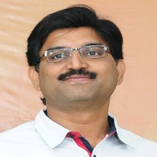
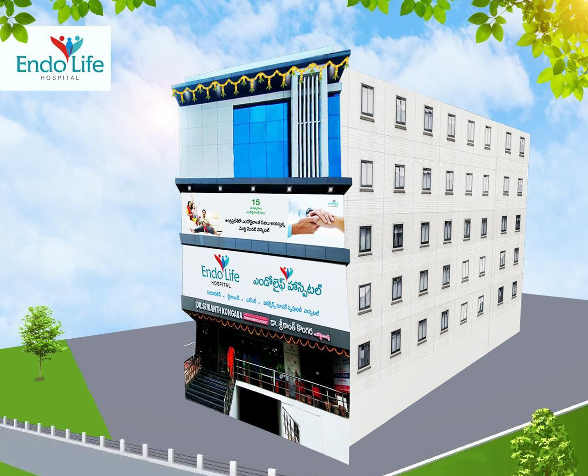

Endolife hospital
Address: D.No. 12-12-94, Old Club Road, Kothapet, Guntur
Gmail: kongarasrikanth@gamil.com
message: 0863: 225200


Dr. Kongara Srikanth (Endolife Speciality Hospitals Pvt Ltd)
MBBS(GGH),MD (AIIMS, DELHI),DM ,SGPGI,Lucknow.
Quick information
- Consultation Fee
₹ 500
- Qualification
- MBBS
- Mode of Payment
Visa / Master Card / Rupay, EMI Financing, Cheque / DD (Demand Draft), Cash
- Timings
Mon - Sat
11:30 am - 6:30 pm
Sun
Closed - Closed
Introduction of the company.
15 years of Trust.
Endo Life Super Speciality Hospitals, is reputed tertiary center in AP, where treatments
for all endocrinology related problems, viz., uncontrolled diabetes, Thyroid, Obesity, Hormones,
endocrine surgeries, radiation therapies & nuclear scans services are available under one roof.
Years of establishment & How the journey started
Started in 2006, by an Endocrinologist, Dr. Srikanth Kongara, a gold medallist from GGH, MD
from prestigious AIIMS, New Delhi and DM (Endocrinology) from SGPGI, Lucknow.
Endo Life currently operates from a fully air conditioned and hygiene premises,
situated at Kothapet, Guntur, which is 1-2 KMs radius from Bus Stand and Railway station.
How we are different :
- Comprehensive care for treating endocrine diseases, with good facility, associated consultants, surgeons, nuclear medicine facility and related infrastructure.
- Treatment for patients at Endo Life are managed with most qualified endocrinologists (AIIMS, SGPGI) backgrounds with more than 15 years of experience.
- First tertiary center in the state of Andhra Pradesh which offers, 360 degrees endocrinology services in the areas of medical, surgical, therapeutic, and preventive areas.
- Established centers of excellence to deliver Endocrinology consultations, Specialized & high end laboratory services, Nuclear Scan center, Nuclear therapeutic centers.
- Successful track record of providing services to many patients across the region for over the last 15 years